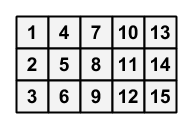

有一个 $3$ 行 $N$ 列的方格表，用 $\left( i, j \right)$ 表示第 $i$ 行第 $j$ 列的小方格。初始时，方格 $\left( i, j \right)$ 上写有数 $i + 3 \left( j - 1 \right)$。
你可以执行如下操作任意次：

现在给定一个目标方格表，询问能否通过上述操作将初始的方格表变为给定的方格表。
第一行包含一个正整数 $N$ ($5 \leq N \leq 10^5$)，表示方格表的列数。
接下来三行，每行 $N$ 个整数 $a_{i, j}$ ($1 \leq i \leq 3; 1 \leq j \leq N; 1 \leq a_{i, j} \leq 3 N$)，表示目标方格表。
保证 $a_{1, 1}, a_{1, 2}, \cdots, a_{1, N}, a_{2, 1}, \cdots, a_{2, N}, a_{3, 1}, \cdots, a_{3, N}$ 构成 $1, 2, \cdots, 3 N$ 的一个排列。
输出一行，包含一个字符串，如果能将初始方格表变为目标方格表，则为 Yes，如果不能，则为 No。
容易发现，如果将每一列看成一个整体，则这个列中的内部的元素组成是不会变化的 —— 即，$1, 2, 3$ 永远在同一列，$4, 5, 6$ 也永远在同一列，……，$3 N - 2, 3 N - 1, 3 N$ 永远在同一列。
而且，所有模 $3$ 余 $2$ 的数 ($2, 5, 8, 11, \cdots$) 一定在第二行。这都是一些平凡的必要条件，如果连这都不满足，答案显然是 No。
考虑满足这种条件的情况，我们将网格 "压缩" 一下，即将 $\left[ 1, 2, 3 \right]$ 看成 $1$，$\left[ 4, 5, 6 \right]$ 看成 $2$，……，$\left[ 3 N - 2, 3 N - 1, 3 N \right]$ 看成 $N$。从而我们就将一个 $3 \times N$ 的方格表转化为了一个 $N$ 元排列。
不过这个排列是有 "方向" 的：比如 $1$ 就有两种存在状态，(从上往下看) $1, 2, 3$ 以及 (从上往下看) $3, 2, 1$。
因此在最终转化完的排列中，我们需要对每个数确定一个 "方向"。为了统一起见，我们下面将 (从上往下看) 递增的称为正向，用绿色表示，将 (从上往下看) 递减的称为逆向，用红色表示。
举个例子，题目描述中的方格表的变化情况可以表示成：
| $\color {green} 1$ | $\color {green} 2$ | $\color {green} 3$ | $\color {green} 4$ | $\color {green} 5$ | $\to$ | $\color {red} 3$ | $\color {red} 2$ | $\color {red} 1$ | $\color {green} 4$ | $\color {green} 5$ | $\to$ | $\color {red} 3$ | $\color {red} 2$ | $\color {red} 5$ | $\color {red} 4$ | $\color {green} 1$ |
我们尝试去寻找这些操作的不变量。
考虑一次操作，不妨设它是对 $2 k - 1, 2 k, 2 k + 1$ 列进行的。
于是，考虑红色数的数量。对于奇数位置，它可能多 $2$，可能少 $2$，还有可能相等。而对于偶数位置，它只能多 $1$ 或少 $1$ (奇偶性改变！)
同时，考虑这些数的顺序。如果我们只提取下标为 $2, 4, 6, \cdots$ 的子列，可以发现它并没有改变。而提取下标为 $1, 3, 5, \cdots$ 的子列后，发现它交换了一对元素。众所周知，对一个置换交换一对元素是会改变它的奇偶性的！
(ps: 一个排列/置换的奇偶性定义为逆序数的奇偶性)
这说明了什么？偶数位置上红色数个数的奇偶性需要等于奇数位置上的置换的奇偶性。
同理，奇数位置上红色数个数的奇偶性需要等于偶数位置上的置换的奇偶性。
于是，这又是两个重要的必要条件。
那么，满足这些条件的所有排列都是可达的吗 (充分性)？
在 $N \geq 5$ 的情况下确实是这样，下面给出证明。
由冒泡排序知，我们可以通过若干次操作将数字的顺序归位。
故只需证明，对排列 $1, 2, \cdots, N$，只要奇数位置和偶数位置上的红色数个数均为偶数，则这个排列可达。
为此，先证明几个引理：
(引理 1) 若 $N \geq 4$，则可以改变连续四个数的颜色。
| $\cdots$ | $\color {green} 1$ | $\color {green} 2$ | $\color {green} 3$ | $\color {green} 4$ | $\cdots$ |
| $\cdots$ | $\color {red} 3$ | $\color {red} 2$ | $\color {red} 1$ | $\color {green} 4$ | $\cdots$ |
| $\cdots$ | $\color {red} 3$ | $\color {red} 4$ | $\color {green} 1$ | $\color {green} 2$ | $\cdots$ |
| $\cdots$ | $\color {red} 1$ | $\color {green} 4$ | $\color {green} 3$ | $\color {green} 2$ | $\cdots$ |
| $\cdots$ | $\color {red} 1$ | $\color {red} 2$ | $\color {red} 3$ | $\color {red} 4$ | $\cdots$ |
(引理 2) 若 $N \geq 5$，则可以改变中间相隔一个元素的两个位置的颜色。
| $\cdots$ | $\color {green} 1$ | $\color {green} 2$ | $\color {green} 3$ | $\color {green} 4$ | $\color {green} 5$ | $\cdots$ |
| $\cdots$ | $\color {red} 3$ | $\color {red} 2$ | $\color {red} 1$ | $\color {green} 4$ | $\color {green} 5$ | $\cdots$ |
| $\cdots$ | $\color {red} 3$ | $\color {red} 2$ | $\color {red} 5$ | $\color {red} 4$ | $\color {green} 1$ | $\cdots$ |
| $\cdots$ | $\color {green} 5$ | $\color {green} 2$ | $\color {green} 3$ | $\color {red} 4$ | $\color {green} 1$ | $\cdots$ |
| $\cdots$ | $\color {green} 5$ | $\color {green} 2$ | $\color {red} 1$ | $\color {green} 4$ | $\color {red} 3$ | $\cdots$ |
| $\cdots$ | $\color {green} 1$ | $\color {red} 2$ | $\color {red} 5$ | $\color {green} 4$ | $\color {red} 3$ | $\cdots$ |
| $\cdots$ | $\color {green} 1$ | $\color {red} 2$ | $\color {green} 3$ | $\color {red} 4$ | $\color {green} 5$ | $\cdots$ |
| $\cdots$ | $\color {red} 1$ | $\color {green} 2$ | $\color {red} 3$ | $\color {green} 4$ | $\color {green} 5$ | $\cdots$ |
(ps: 最后一步是使用引理 1)
只需要不断重复此操作，即可达到所有 "奇数位置和偶数位置上的红色数个数均为偶数" 的排列，结论成立。
于是它已经成为充要条件，接下来就只需要实现它了。
首先，红色数个数的奇偶性非常容易求得，因此只需考虑置换的奇偶性。
由定义，它等于逆序数的奇偶性，于是只需要求出逆序数。而逆序数可以通过归并排序或树状数组来求，不过都是 $O \left( N \log N \right)$ 的，太慢了。
事实上，由置换循环表示的性质，我们还可以得到如下结论 (证明只需对逆序数归纳即可)：
一个 $n$ 元置换 $g$ 的奇偶性和 $n - \# \left( g \right)$ 的奇偶性相同，其中 $\# \left( g \right)$ 表示 $g$ 的循环数，即循环表示中循环的个数。
而置换的循环表示是容易在 $O \left( N \right)$ 时间内求得的，因此这道题就能在 $O \left( N \right)$ 时间内解决啦。
#include <bits/stdc++.h>
#define fail() return puts("No"), 0
const int N = 100054;
int n;
int a[N], b[N], c[N], d[N];
bool vis[N];
bool parity(int n, int *p) {
int i, j; bool par = n & 1;
memset(vis, false, n);
for (i = 0; i < n; ++i) if (!vis[i])
for (par ^= 1, j = i; !vis[j]; j = p[j]) vis[j] = true;
return par;
}
int main() {
int i; div_t r; bool flip[2] = {false, false};
scanf("%d", &n);
for (i = 0; i < n; ++i) scanf("%d", a + i);
for (i = 0; i < n; ++i) scanf("%d", b + i);
for (i = 0; i < n; ++i) scanf("%d", c + i);
for (i = 0; i < n; ++i)
if (r = div(b[i], 3), r.rem != 2) fail();
else if ((r.quot ^ i) & 1) fail();
else if (a[i] == 3 * r.quot + 1 && c[i] == 3 * (r.quot + 1)) d[i] = r.quot / 2;
else if (a[i] == 3 * (r.quot + 1) && c[i] == 3 * r.quot + 1) d[i] = r.quot / 2, flip[i & 1] ^= 1;
else fail();
for (i = 0; i < n; ++i) (i & 1 ? b : a)[i / 2] = d[i];
puts(parity((n + 1) / 2, a) == flip[1] && parity(n / 2, b) == *flip ? "Yes" : "No");
return 0;
}
坑1：这里需要对奇数位置上的置换和偶数位置上的置换分别求奇偶性，再交叉比较，不要只求一个或求错了。
坑2：一开始不要忘记判断一些平凡的必要条件 (题解开头所讲的)。